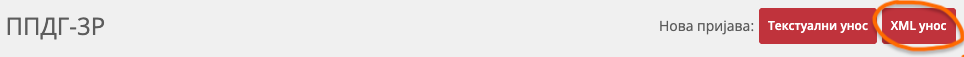

Quick Start
English | Русский | Українська | Srpski | Српски
Automated generation of PPDG-3R (Capital Gains Tax) and PP OPO (Capital Income Tax) declarations for Interactive Brokers users in Serbia.
The app downloads your trades from Interactive Brokers and creates a ready-to-upload XML file for ePorezi. It tracks the full chain of purchases and sales for each security, calculates profit and loss, and converts all amounts to dinars at the official NBS exchange rate on the date of each transaction — exactly as required by the declaration.
Installation
⚠️ Windows and macOS will block the download or launch — the app is distributed for free, and paying ~€100/year for a developer certificate is not an option. The installation guide explains how to work around this — read it before downloading.
How to use
- Open the app — it will launch with a graphical interface.
- Click Config and enter your Interactive Brokers credentials.
- Click Sync now — the app will download your latest trades and create declarations.
- Upload the generated XML file to the ePorezi portal (PPDG-3R section).

💡 From then on, while the app is running it keeps checking for new data automatically — once a day, in the background, retrying until it succeeds. The status of the last attempt is always shown at the top of the window.
ℹ️ If you have more than one year of trade history in Interactive Brokers — you need to load the older data manually before the first Sync. How to do this ↗
Full documentation for the command line and other features — see Usage ↗.
English | Русский | Українська | Srpski | Српски
Installation
Installer
Download the installer from the releases page:
https://github.com/andgineer/ibkr-porez/releases
macOS
Download the latest .pkg file.
Because the installer is not signed with an Apple certificate, macOS will block it when you try to open it.
“IBKR Porez” is damaged and can’t be opened. You should move it to the Bin.
Do not move it to the Bin. Instead:
- Open System Settings → Privacy & Security
- At the bottom of the Security section, you will see a blocked-app message. Click Open Anyway
- Confirm opening in the next dialog
You may need to repeat the same steps twice:
- first when opening the downloaded installer (
.dmg) - and again when launching the installed app from
/Applicationsfor the first time
After that, the app should launch without warnings.
Windows
Download the latest .msi file.
Because the installer is not code-signed, Windows may show security warnings.
If your browser blocks the download (for example in Microsoft Edge):
- Open the browser downloads panel (
Ctrl+J) - Find the blocked
.msidownload - Click Keep → Show more → Keep anyway
When launching the installer, Windows may show Windows protected your PC:
- Click More info
- Click Run anyway
You may also see a User Account Control dialog with Unknown publisher. If the file came from the official releases page, click Yes to continue.
After installation, IBKR Porez will appear in the Start Menu.
For Advanced Users
The installer also sets up the ibkr-porez command for the terminal
(you may need to restart the terminal after installation).
Download Prebuilt Binary
You can also download binaries for your platform from the releases page:
https://github.com/andgineer/ibkr-porez/releases
The archive contains both binaries: ibkr-porez (CLI) and ibkr-porez-gui (GUI).
Extract the archive and place the files somewhere in your PATH.
Install from Source
If you have the Rust toolchain installed:
cargo install ibkr-porez
English | Русский | Українська | Srpski | Српски
Usage
Quick Start
If you want to quickly create a specific declaration:
- Configure settings (config) ↗ — once on first run
- Fetch latest data (fetch) ↗
- Generate report (report) ↗
- Upload the generated XML to the ePorezi portal (PPDG-3R section)
To automatically receive all declarations and track their statuses — use sync instead of steps 2–3.
Configuration (config)
ibkr-porez config
Creating or modifying personal data and IBKR access settings.
You will be prompted for:
- IBKR Flex Token: Get Token ↗
- IBKR Query ID: Create Flex Query ↗
- Personal ID: JMBG / EBS
- Full Name: First and Last Name
- Address: Registered Address
- City Code: 3-digit municipality code. Example:
223(Novi Sad). Code can be found in the list (see column “Šifra”). Also available in the dropdown on the ePorezi portal. - Phone: Phone
- Email: Email
- Data Directory: Absolute path to folder with data files (
transactions.json,declarations.json,rates.json, etc.). Default:ibkr-porez-datain the application folder. - Output Folder: Absolute path to folder for saving files from
sync,export,export-flex,reportcommands. Default: your system’s Downloads folder.
Fetch Data (fetch)
ibkr-porez fetch
Downloads latest data from IBKR and syncs exchange rates from NBS (National Bank of Serbia).
Saves them to local storage.
Import Historical Data (import)
ibkr-porez import /path/to/activity_statement.csv
Loading transaction history older than 365 days, which cannot be retrieved via Flex Query (fetch).
To create a file with transactions on the Interactive Brokers portal, see Export Full History ↗
⚠️ Do not forget to run
fetchafterimportso the application adds maximum details at least for the last year into the less detailed data loaded from CSV.
Synchronization Logic (import + fetch)
When loading data from CSV (import) and Flex Query (fetch), the system prioritizes more complete Flex Query data:
- Flex Query (
fetch) data is the source of truth. It overwrites CSV data for any matching dates. - If a Flex Query record matches a CSV record semantically (Date, Ticker, Price, Quantity), it counts as an update (replacing with official ID).
- If data structure differs (e.g. split orders in Flex Query vs “bundled” record in CSV), the old CSV record is removed, and new Flex Query records are added.
- Completely identical records are skipped.
Sync Data and Create Declarations (sync)
ibkr-porez sync
Does the same as fetch:
- Downloads latest transactions from IBKR via Flex Query
- Syncs exchange rates from NBS
Then creates all necessary declarations for the last 45 days (if they haven’t been created already).
You can then Manage created declarations.
💡 If you ran
syncfor the first time and it created declarations that you already submitted before starting to use the application, you can quickly mark them all as paid and remove them from list output:ibkr-porez list --status submitted -1 | ibkr-porez pay
Sync from a Downloaded XML File (sync --file)
If the IBKR API is temporarily unavailable, you can download the Flex Query XML manually from the IBKR website and use it instead:
ibkr-porez sync --file /path/to/report.xml
Does everything sync does — saves transactions, generates all necessary declarations — but reads data from a local file instead of calling the IBKR API.
See how to download the Flex Query XML ↗.
In the GUI, the same option is available in the ☰ hamburger menu as Sync from Flex Query XML….
View Statistics (stat)
ibkr-porez stat --year 2025
ibkr-porez stat --ticker AAPL
ibkr-porez stat --month 2025-01
Shows:
- Dividends received (in RSD)
- Number of sales (taxable events)
- Estimated Realized P/L (Capital Gains) (in RSD)
- Detailed breakdown by tickers or months (when using filters)
Generate Tax Report (report)
ibkr-porez report
If you don’t specify report type and period, PPDG-3R for the last complete half-year is generated by default
- Creates
ppdg3r_XXXX_HY.xmlin Output Folder - Import this file into the Serbian Tax Administration portal (ePorezi)
- Manually upload the file from Confirmation Document to Item 8
To select a different declaration type or time period, see the documentation
ibkr-porez report --help
Declaration Management
After creating declarations through the sync command, you can view them, change their status, and export them for upload to the tax portal.
List Declarations (list)
Shows a list of all declarations with the ability to filter by status.
# Show active declarations (default):
# draft + submitted + pending
ibkr-porez list
# Show all declarations
ibkr-porez list --all
# Filter by status
ibkr-porez list --status draft
ibkr-porez list --status submitted
ibkr-porez list --status pending
ibkr-porez list --status finalized
# Only declaration IDs (for use in pipes)
ibkr-porez list --ids-only
ibkr-porez list --status draft -1
Example usage in Linux-style:
# Submit all drafts
ibkr-porez list --status draft -1 | ibkr-porez submit
View Declaration Details (show)
Shows detailed information about a specific declaration.
ibkr-porez show <declaration_id>
Displays:
- Declaration type (PPDG-3R or PP OPO)
- Declaration period
- Status (draft, submitted, pending, finalized)
- Transaction details and calculations
- For PPDG-3R: tax-authority-recognized gain/loss alongside the calculated values, the capital loss carryforward applied (opening/used/adjusted/ closing balance), and which vintages it was drawn from
- Attached files
Submit Declaration (submit)
ibkr-porez submit <id> [<id> ...]
Marks the declaration as submitted (imported to the tax portal).
Behavior depends on declaration type:
PPDG-3Rmoves topendingaftersubmit(waiting for tax authority assessment).PP OPOaftersubmit:- moves to
submittedif tax is due; - moves directly to
finalizedif tax due is0.
- moves to
Pay Declaration (pay)
ibkr-porez pay <id> [<id> ...]
ibkr-porez pay <id> --tax 1234.56
Marks the declaration as finalized and stores payment date.
Option --tax lets you record tax amount during payment, without a separate assess step.
After this, it will disappear from the list shown by list (without --all)
Record Assessed Tax (assess)
# Record the official tax amount from the assessment
ibkr-porez assess <declaration_id> --tax 1234.56
# Record the amount and immediately mark it as already paid
ibkr-porez assess <declaration_id> --tax 1234.56 --paid
# Record a capital loss recognized by the tax authority (PPDG-3R only)
ibkr-porez assess <declaration_id> --loss 50000.00 \
--reference "RES-123/2025" --date 2025-09-01
# Record a capital gain recognized by the tax authority (PPDG-3R only)
ibkr-porez assess <declaration_id> --gain 12000.00
This command is mainly for PPDG-3R, where the tax amount as well as the
recognized capital gain/loss are determined by the tax authority after
submission.
What it does:
- stores the official tax amount in the declaration metadata (
--tax); - with
--paid, immediately moves the declaration tofinalized; - without
--paid:- if the amount is greater than zero, keeps the declaration active (
submitted) for later payment; - if the amount is zero, moves the declaration to
finalized.
- if the amount is greater than zero, keeps the declaration active (
At least one of --tax, --gain, or --loss must be provided.
--gain and --loss are only available for PPDG-3R and record the capital
gain/loss recognized by the tax authority — they are stored alongside the
application’s calculated values and may differ from them (due to CPI
adjustments or the tax authority’s methodology). A single assessment cannot
recognize both a gain and a loss.
--reference, --date, and --notes are optional details about the
assessment decision (reference number, date, notes), shown in
show.
If the assessment recognizes a loss (--loss greater than zero), an entry is
created (or updated) in the
capital loss carryforward registry.
The carryforward is always based on the loss recognized by the tax authority,
not the calculated one.
⚠️ Once a carried-forward loss has been at least partially used by a subsequent declaration, the recognized loss can no longer be changed via
assess— the command will return an error.
Capital Loss Carryforward (carryforward)
ibkr-porez carryforward
Shows all vintages of capital losses recognized by the tax authority that are available for carryforward to future periods:
- the source declaration and the period for which the loss was recognized;
- the recognized and remaining (unused) amount;
- the tax year after which the carryforward expires (a loss can be carried forward for 5 years);
- status:
Active(usable),Exhausted(fully used),Expired(past its expiration).
The same list is available in the GUI from the ☰ menu → Capital loss carryforward….
Every PPDG-3R declaration created via
sync automatically reduces the
calculated tax base using available carryforward (from older periods to
newer), until the base reaches zero or the carryforward is exhausted. The
report preview shows the carryforward amount
used and remaining afterwards. The amount is deducted from the registry once
— when the declaration is saved; re-running sync for the same period does
not deduct it again.
Export Declaration (export)
ibkr-porez export <declaration_id>
ibkr-porez export <declaration_id> -o /path/to/output
Copies XML and all attached files (attach) to Output Folder or to the directory specified in parameters.
Revert Declaration Status (revert)
# Revert to draft (default)
ibkr-porez revert <id> [<id> ...]
# Revert to submitted
ibkr-porez revert <id> [<id> ...] --to submitted
Reverts declaration status.
Attach File to Declaration (attach)
# Attach file
ibkr-porez attach <declaration_id> /path/to/file.pdf
# Delete attached file
ibkr-porez attach <declaration_id> <file_id> --delete
ibkr-porez attach <declaration_id> --delete --file-id <file_id>
Attaches a file to a declaration or removes an attached file from declaration storage.
For saving to declaration storage, only the file name is used (path is discarded), so names must be unique - otherwise a file with the same name will overwrite a previously uploaded file with the same name even if from a different path
💡 Attached files are copied along with the declaration XML during export
Export Flex Query (export-flex)
ibkr-porez export-flex 2025-01-15
ibkr-porez export-flex 2025-01-15 -o /path/to/output.xml
ibkr-porez export-flex 2025-01-15 -o - # Output to stdout (for pipes)
Exports Flex Query XML file obtained during fetch or sync on the specified date.
Example usage in Linux-style:
ibkr-porez export-flex 2025-01-15 | ibkr-porez sync --file -
English | Русский | Українська | Srpski | Српски
Interactive Brokers (IBKR)
Flex Web Service
- Performance & Reports > Flex Queries.
- Click the Settings icon (gear) in “Flex Web Service Configuration”.
- Enable Flex Web Service.
- Generate Token.
- Important: Copy this token immediately. You will not be able to see it fully again.
- Set expiration (recommended max - 1 year).
Flex Query
- Performance & Reports > Flex Queries.
- Click + to create a new Activity Flex Query.
- Name: e.g.,
ibkr-porez-data. - Delivery Configuration (at the bottom of the page):
- Period: Select Last 365 Calendar Days.
- Format: XML.
Sections to Include:
Enable the following sections and check Select All for columns.
If you don’t trust anyone 8-) instead of Select All, select at least the fields listed in Required Columns.
Transactions
Located under Trade Confirmations or Activity.
Required Columns
SymbolDescriptionCurrencyQuantityTradePriceTradeDateTradeIDOrigTradeDateOrigTradePriceAssetClassBuy/Sell
Cash Transactions
Required Columns
TypeAmountCurrencyDateTime/DateSymbolDescriptionTransactionID
Save and Get Query ID
Note the Query ID (number usually appearing next to the query name in the list).
You will need the Token and Query ID to configure ibkr-porez.
Confirmation Document
For Item 8 (Dokazi uz prijavu) of the PPDG-3R tax return, you need a PDF report from the broker. It must be attached manually on the ePorezi portal after importing the XML.
How to download the appropriate report:
- In IBKR go to Performance & Reports > Statements > Activity Statement.
- Period: Select Custom Date Range.
- Specify dates corresponding to your tax period (e.g.,
01-01-2024to30-06-2024for the first half). - Click Download PDF.
- On the ePorezi portal, in section 8. Dokazi uz prijavu, upload this file.
Download Flex Query XML (for sync --file)
If the IBKR API (sync / fetch) is temporarily unavailable, you can run your Flex Query manually from the IBKR website:
- In IBKR go to Performance & Reports > Statements > Flex Queries.
- Find the query you created for
ibkr-porez(e.g.,ibkr-porez-data). - Click Run (blue arrow to the right of the query name).
- Select XML format and download the file.
- Use it with the
sync --file↗ command or the Sync from Flex Query XML… option in the GUI hamburger menu.
Export Full History (for import command)
If you need to load transaction history for a period longer than 1 year (unavailable via Flex Web Service), export data to CSV:
- In IBKR go to Performance & Reports > Statements > Activity Statement.
- Period: Select Custom Date Range and specify the entire period since account opening.
- Click Download CSV.
- This file can be used with the import ↗ command.